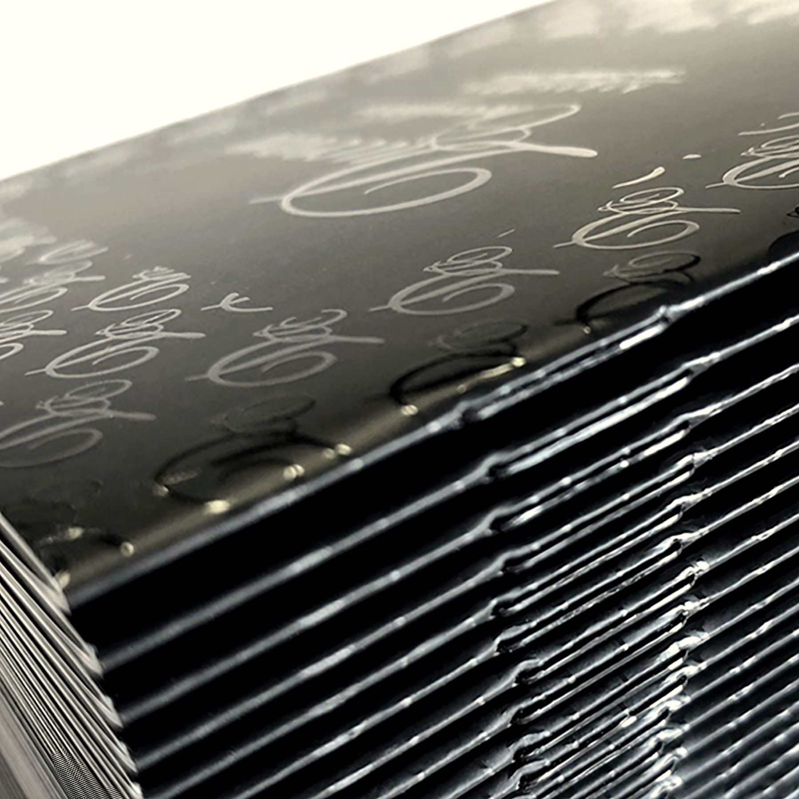
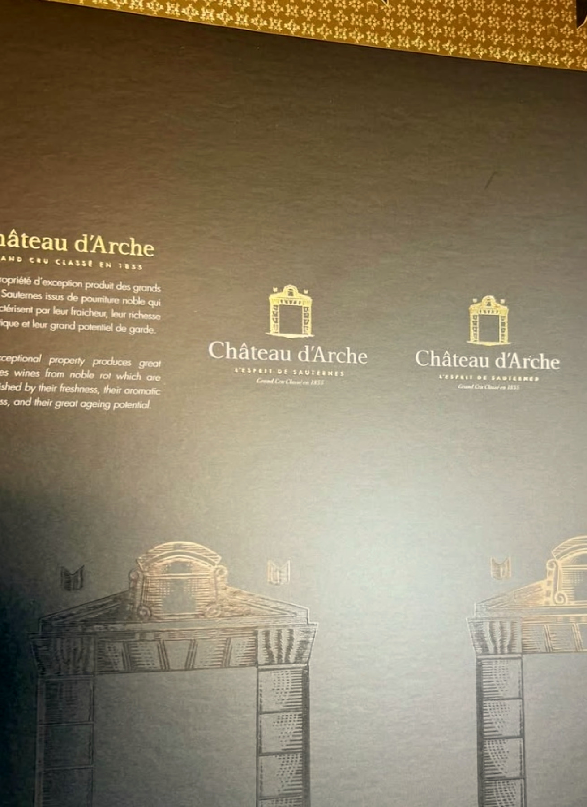
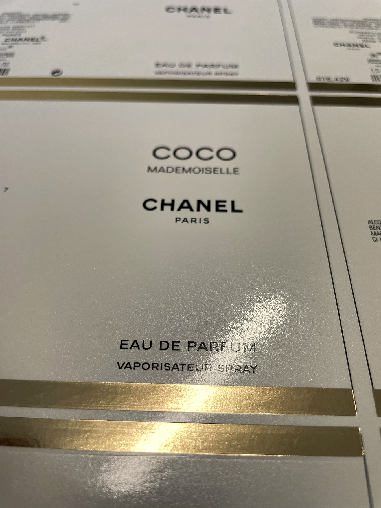

Accueil / Savoir-faire / Pelliculage
Pelliculage
Un film fin qui change tout en main : la couleur gagne en profondeur, la pièce résiste aux frottements et aux traces de doigts. Mat, brillant ou toucher velours, selon l'effet que vous cherchez.

Trois finitions, une même lumière
Déplacez la lumière sur la carte : le brillant renvoie un reflet net, le mat l'adoucit, le toucher velours l'absorbe presque entièrement.
Simulation indicative : le rendu réel dépend du support et de l'impression.
Déplacez la sourisFaites glisser le doigt sur la carte pour faire bouger la lumière
Ce que nous réalisons
Trois finitions pour habiller étuis, coffrets, étiquettes et couvertures, pour les imprimeurs des vins et spiritueux, de l'agro-alimentaire premium, de la cosmétique et du luxe.

Pelliculage mat
Une surface sans reflet, sobre et lisible, qui fait ressortir une dorure ou un vernis sélectif.

Pelliculage brillant
Des couleurs plus vives et plus profondes, avec un reflet net qui attire l'œil.

Toucher velours
Une peau douce, presque veloutée, qu'on a envie de garder en main.
En pratique
- Format maximum
- 75 × 105 cm
- Supports
- Papier et carton compact, de 0,1 à 1,8 mm
- Finitions
- Mat, brillant, toucher velours
- Associations
- Avant une dorure, un vernis sélectif ou une découpe
- Délai moyen
- 1 à 2 semaines, transport compris
- Essais
- Possibles pour les dossiers techniques
Questions fréquentes
Mat, brillant ou velours : lequel choisir ?
Le brillant fait vibrer les couleurs, le mat donne une allure sobre et sans reflet, le toucher velours apporte une sensation douce très haut de gamme. Dites-nous l'effet recherché, nous vous conseillons.
Peut-on dorer ou vernir sur un pelliculage ?
Oui, c'est même l'association la plus courante : une dorure ou un vernis sélectif sur un pelliculage mat ou velours crée un contraste immédiat.
Le pelliculage protège-t-il la pièce ?
Oui. Le film limite les rayures, les frottements et les traces de doigts, ce qui compte pour un étui manipulé en rayon.
Un projet de pelliculage ?
Se combine avec la dorure à chaud, le gaufrage, la découpe et le vernis sélectif, dans le même atelier.